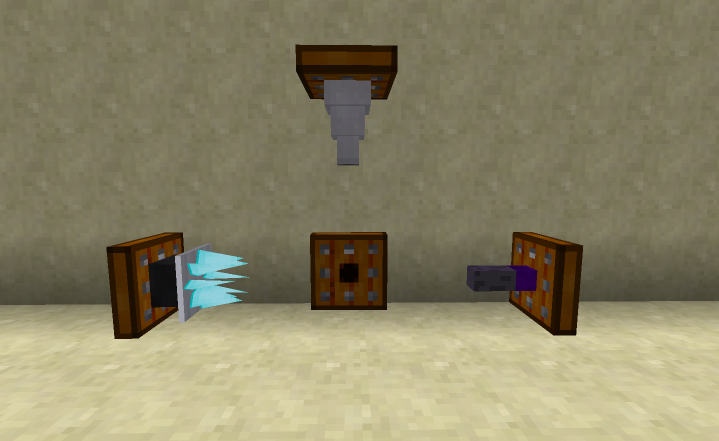
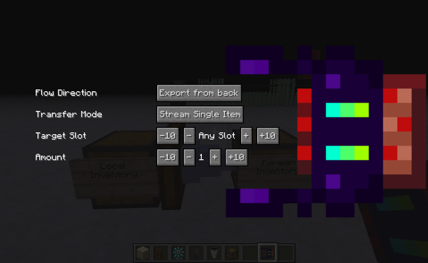

is used to control them instead.
is used to control them instead.
Socket tools are machines that are designed to be inserted into either sockets (as a block), or servos (as an entity). There are presently 3 socket tools available. The Item Shifter moves items. The Lacerator grinds ores, breaks blocks, and kills mobs. The robot hand deploys items.
All socket tools need an inventory behind them. If mounted in a servo, the servo itself provides this inventory. Otherwise, the socket block needs to be placed up against an inventory block.
Socket tools react to redstone.
If mounted on a servo, then the Socket Signal is used to control them instead.
The Lacerator breaks blocks, grinds ores, and kills mobs. (It replaces the grinder.) If an ore in front of it is part of the FZ ore processing chain, then it will be ground into dirty ore gravel. It has many recipes for other kinds of blocks. For example, leaves have a chance of being broken into sticks, and glowstone lamps are broken into 4 glowstone dust.
The time it takes for the lacerator to break a block depends on the block's hardness. Sugar cane will break instantly, and obsidian will take a while to break.
If the lacerator is used to kill mobs, it has a 1-in-20 chance of dropping the XP it would drop if killed by a player (and possibly other loot).
The lacerator will pick up any items dropped by breaking blocks or killing mobs. It requires a an inventory to output the items it makes into; if there is no inventory, or it is full, then the lacerator will wait until there is room in it before continuing.
It can also process items that are in barrels, though it may be slower than processing the blocks directly.
Applying a redstone signal will disable the lacerator.
The item shifter moves items from behind it to an inventory in front of it.
It has many options to control its behavior.
Clicking on the shifter with a Logic Matrix Programmer will open a GUI to configure its behavior; this can be done in a socket block or on a servo.
If the shifter is on a servo, then its properties can also be controlled using an Item Shifter Controller. 

Flow Direction: This controls which way the items flow. The back of the socket block must be adjacent to an inventory; this is the "local inventory". (If the Item Shifter is on a servo, then the servo itself is the local inventory.)
Transfer Mode: There are three modes:
"Stream Single Item" is the default mode. This makes the shifter behave like a hopper, excepting that a redstone signal enables rather than disabling.
"Pulse Exact Amount" transfers the amount of items specified in 'Amount'. It will not transfer fewer than the specified amount. It will grab items from multiple slots to get enough items. It will transfer each time it recieves a redstone pulse.
"Pulse Some Amount" transfers, at most, the amount specified. Unlike Pulse Exact, it will not pull from multiple slots at a time. It will transfer each time it recieves a redstone pulse.
Target Slot: This specifies which slot to access in the foreign inventory; it does nothing with the local inventory. (If the value is -1, then items will go to/from any slot)
Amount: How many items to move. Between 1 and 64.
The robotic arm deploys items.